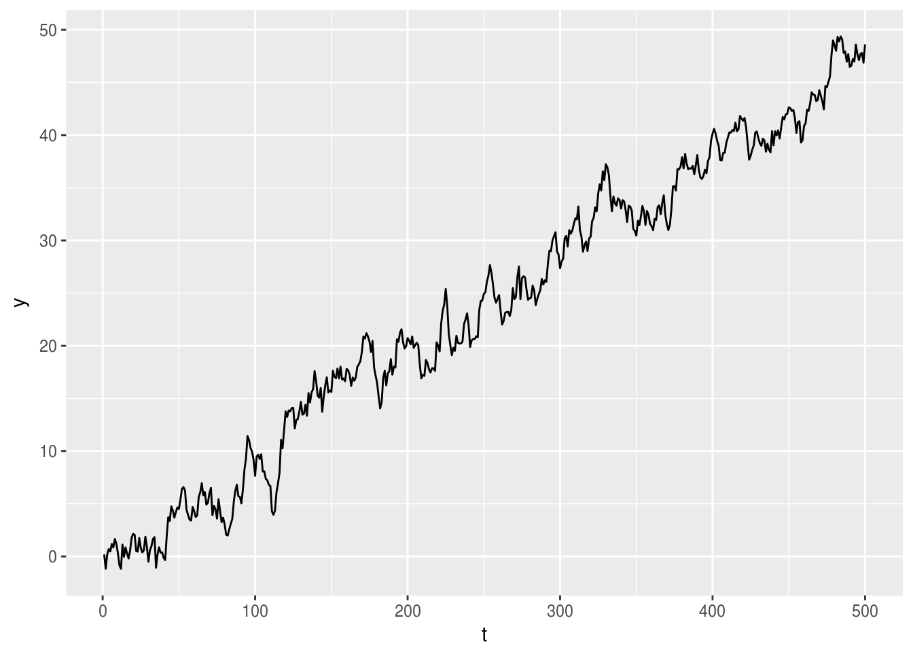
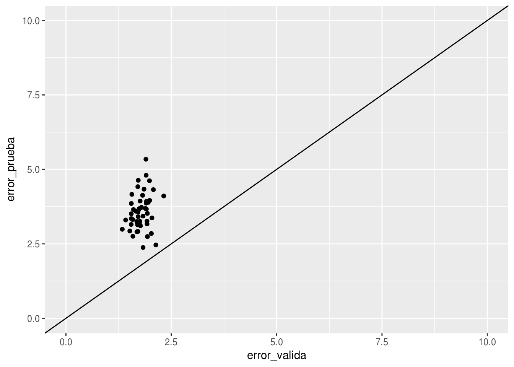
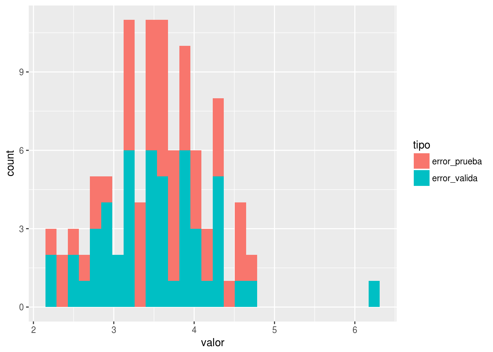
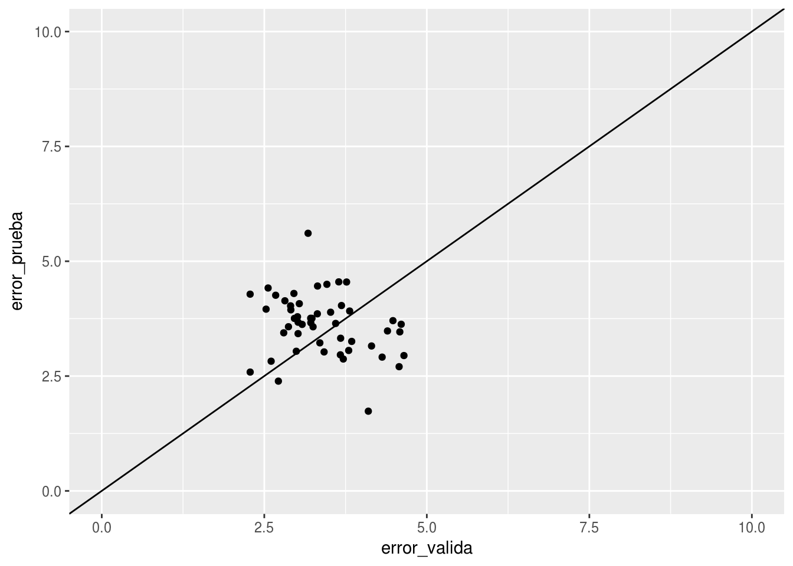
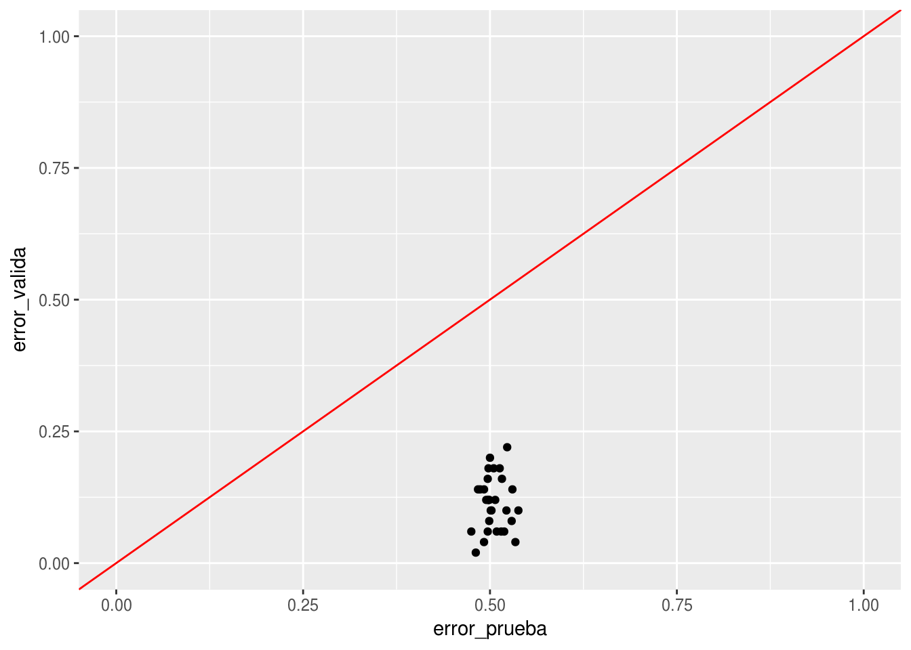
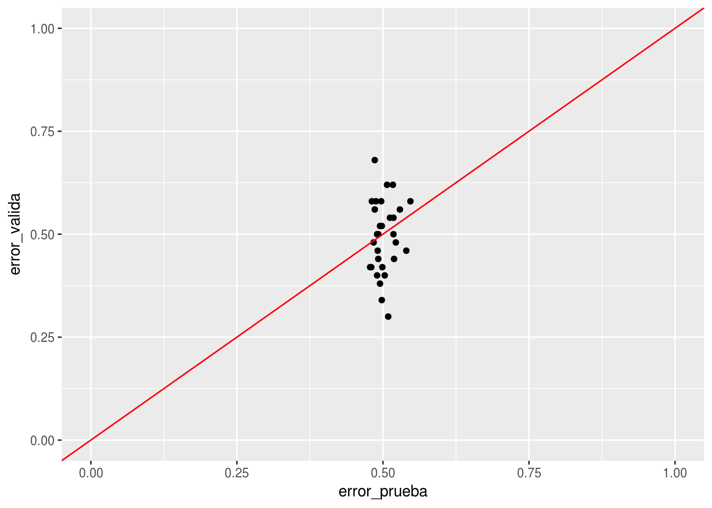
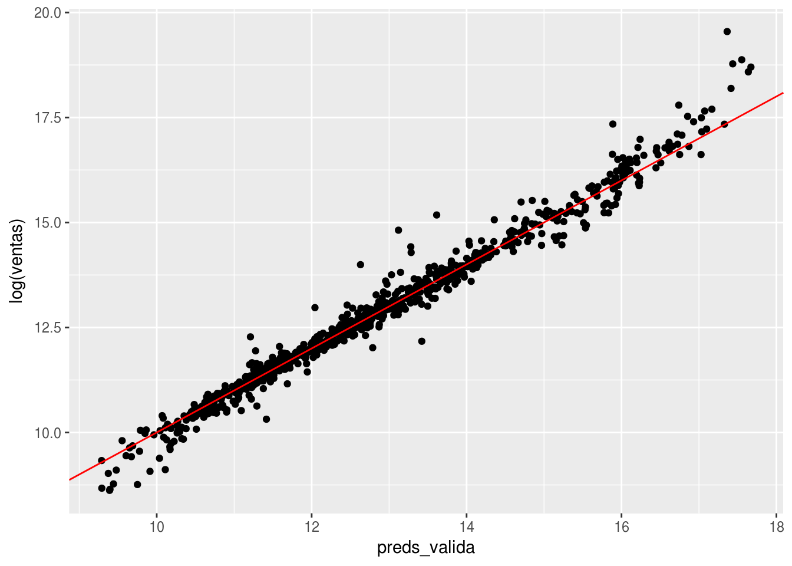
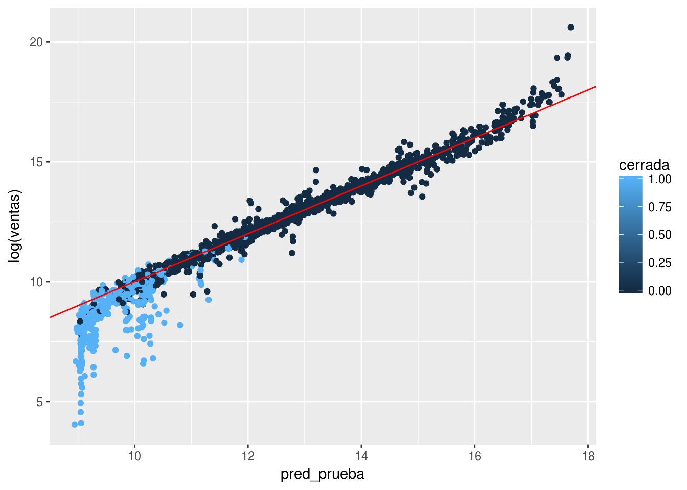
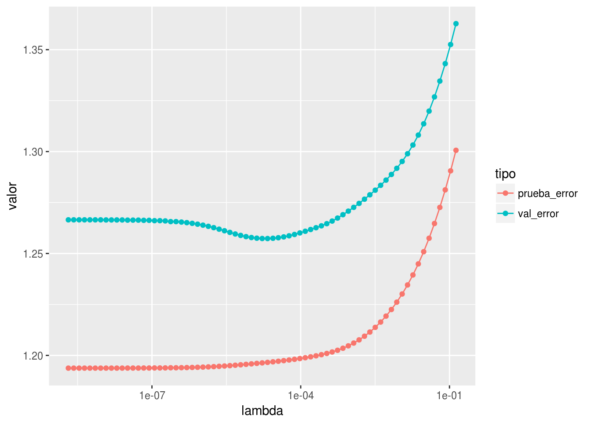
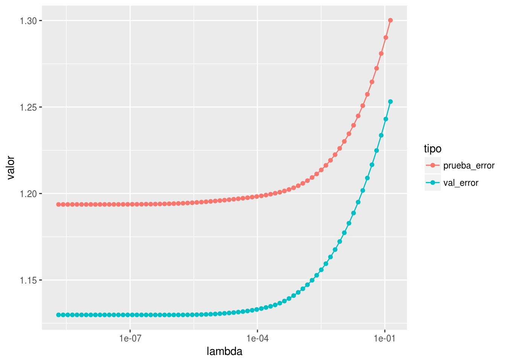

Clase 13 Validación de modelos: problemas comunes
En aprendizaje de máquina, el ajuste y afinación de parámetros es tan importante como la evaluación de desempeño o validación de los modelos resultantes. Ninguna funciona bien sin que la otra sea correctamente ejecutada. Hemos visto que ambas partes tienen dificultades algunas veces sutiles (tanto el ajuste y optimización como la evaluación de las predicciones) que pueden hacer fracasar nuestro ejercicio de modelación.
En esta parte hablaremos de la evaluación de modelos. En aprendizaje máqina, considerando que utilizamos relativamente pocos supuestos teóricos, dependemos de esa evaluación para asegurarnos que estamos capturando patrones reales y útiles en los datos.
Todo lo que veremos aplica tanto a separación de muestras de validación como a uso de algún tipo de validación cruzada (validación cruzada, estimación OOB en árboles, validación bootstrap, etc.)
13.1 Filtración de datos
- La filtración de datos ocurre cuando nuestro proceso de validación está contaminado por información que en la tarea real de predicción no tendremos disponible. En consecuencia, nuestras estimaciones de desempeño del modelo (validación) son optimistas en relación al desempeño verdadero.
- También podemos pensar en filtraciones tanto al conjunto de entrenamiento y validación, cuando ambos están contaminados con información que no estará disponible al momento de hacer las predicciones. Esto produce modelos que no es posible poner en producción.
El primer tipo de filtraciones es más difícil de detectar antes de la puesta en producción de los modelos. El segundo tipo puede descubrirse cuando nos damos cuenta de que no es posible implementar en producción nuestro modelo porque no hay información disponible que usamos para construirlo (o peor, cuando cometemos un error en la implementación y el modelo se desempeña mal posterioremente).
Veamos el primer caso: filtración de conjuntos de validación al conjunto de entrenamiento.
La filtración de datos puede ocurrir de muchas maneras, muchas veces inesperadas. Quizá uno de los ejemplos más típicos es el validación de modelos de series de tiempo.
13.2 Series de tiempo
Comenzamos con un ejemplo simulado. Haremos varias simulaciones para incorporar la variación producida en los modelos por la muestra de entrenamineto
library(methods)
library(randomForest)
library(tidyverse)
library(glmnet)simular_datos <- function(n = 500,...){
datos <- data_frame(t=1:n, x = rnorm(n,0,1))
y <- numeric(n)
#nivel <- numeric(n)
#nivel[1] <- 10
y[1] <- datos$x[1] #+ nivel[1]
for(i in 2:n){
#nivel[i] <- nivel[i-1] + rnorm(1, 0, 0.1)
#y[i] <- 0.01*i + datos$x[i] + nivel[i] + rnorm(1,0,0.05)
y[i] <- 0.01*i + datos$x[i] + 0.9*y[i-1] + rnorm(1,0,0.05)
}
datos$y <- y
datos
}
separar <- function(df, prop){
df <- df %>% rowwise %>% mutate(tipo = ifelse(t > floor(nrow(df)*(prop[1]+prop[2])), 'prueba',
sample(c('entrena','valida'),1)))
split(df, df$tipo)
}
ajustar_evaluar <- function(df_split){
mod_1 <- randomForest(y ~ x + t, data = df_split[['entrena']])
error_valida <- sd(predict(mod_1, df_split[['valida']])-df_split[['valida']]$y)
error_prueba <- sd(predict(mod_1, df_split[['prueba']])-df_split[['prueba']]$y)
c(error_valida = error_valida, error_prueba = error_prueba)
}Por ejemplo:
ggplot(simular_datos(), aes(x=t, y=y)) + geom_line()
Separamos ingenuamente entrenamiento y prueba y ajustamos un modelo de regresión:
errores <- simular_datos(500) %>% separar(prop= c(0.4,0.4,0.2)) %>% ajustar_evaluar
errores## error_valida error_prueba
## 1.528424 2.678034reps_1 <- map(1:50, simular_datos, n = 500) %>%
map(separar, prop= c(0.6,0.2,0.2)) %>%
map(ajustar_evaluar) %>%
transpose %>% map(unlist) %>% as_data_frame
gr_reps_1 <- reps_1 %>% mutate(rep = row_number()) %>%
gather(tipo, valor, -rep)
ggplot(reps_1, aes(x=error_valida, y=error_prueba)) + geom_point() + geom_abline() +
xlim(c(0,10)) + ylim(c(0,10))
Y vemos que los errores de validación son consistentemente menores, y por margen alto, que los errores de prueba. Podemos ver que hay un desacuerdo entre el proceso de validación y de prueba:
- Los valores de validación y de entrenamiento están intercalados, pues fueron seleccionados al azar.
- Pero el error de predicción se calcula para el futuro, y esos datos futuros no tienen traslape en tiempo con la muestra de entrenamiento.
De esta manera, podríamos decir que cuando hacemos predicciones para el conjunto de validación, se nos filtran valores del futuro cercano, lo cual no tenemos disponible a la hora de probar el modelo.
Podríamos cambiar nuestra manera de probar el modelo, escogendo la muestra de validación al final del periodo.
separar_valid_futura <- function(df, prop){
df <- df %>% rowwise %>% mutate(tipo = ifelse(t < nrow(df)*prop[1], 'entrena',
ifelse(t<nrow(df)*(prop[1]+prop[2]),'valida','prueba')))
split(df, df$tipo)
}reps_2 <- map(1:50, simular_datos, n = 500) %>%
map(separar_valid_futura, prop= c(0.6,0.2,0.2)) %>%
map(ajustar_evaluar) %>%
transpose %>% map(unlist) %>% as_data_frame
gr_reps_2 <- reps_2 %>% mutate(rep = row_number()) %>%
gather(tipo, valor, -rep)
ggplot(gr_reps_2, aes(x=valor, group=tipo, fill=tipo)) + geom_histogram()## `stat_bin()` using `bins = 30`. Pick better value with `binwidth`.
ggplot(reps_2, aes(x=error_valida, y=error_prueba)) + geom_point() + geom_abline() +
xlim(c(0,10)) + ylim(c(0,10))
Observaciónes:
- Nótese que la fuente más grande de error no proviene de el hecho de que el sistema que queremos predecir es dinámico (el primer modelo, por ejemplo, usa valores más cercanos a los del futuro que queremos predecir). El problema es la filtración de datos del pasado cercano y futuro desde el conjunto de validación al de prueba.
- Este era parte del problema en hacer validación aleatoria simple en el concurso de las fotos. Un tratamiento de este tipo para el problema de las fotos ayudaba a obtener estimaciones más realistas del desempeño.
13.3 Filtración en el preprocesamiento
Cuando preprocesamos datos para incluir en el modelo, es importante asegurarnos de no filtrar información de los datos de validación hacia los datos de enrenamiento. Nos aseguramos de esto si nuestro procesamiento, por ejemplo, es caso por caso con parámetros preestablecidos (no calculamos agregados de todos los datos, por ejemplo), o para más seguridad, haciendo por separado el preprocesamiento de entrenamiento y validación y considerando qué valores pasamos de un conjunto de datos al otro.
Un ejemplo clásico es el de selección de variables, como vimos en el examen. Repetiremos varias veces para confirmar más sólidamente la idea
seleccion_ajuste <- function(...){
y <- rbinom(50, 1, 0.5)
x <- matrix(rnorm(50*500,0,1), 50, 500)
correlaciones <- cor(x, y)
# Seleccionamos las 50 variables con mayor correlación
vars_selec <- order(correlaciones, decreasing=TRUE)[1:50]
# Hacemos la validación cruzada usual - que en este caso es errónea
est_val_cruzada <- sapply(1:10, function(i){
x_vc <- x[-((5*i -4):(5*i)),]
y_vc <- y[-((5*i -4):(5*i))]
mod <- glmnet(y=y_vc, x= x_vc[,vars_selec], alpha=0, family='binomial',
lambda = 0.5)
preds_p <- predict(mod, newx = x[((5*i -4):(5*i)),vars_selec])[,1]
mean((preds_p > 0) != y[((5*i -4):(5*i))])
})
error_validacion <- mean(est_val_cruzada)
modelo <- glmnet(y=y, x= x[,vars_selec], alpha=0, family='binomial',
lambda = 0.5)
y_p <- rbinom(1000, 1, 0.5)
x_p <- matrix(rnorm(1000*500,0,1), 1000, 500)
preds_p <- predict(modelo, newx = x_p[, vars_selec])[,1]
error_prueba <- mean((preds_p > 0) != y_p)
c('error_valida'=error_validacion, 'error_prueba'=error_prueba)
}
seleccion_ajuste()## error_valida error_prueba
## 0.12 0.50El resultado es catastrófico otra vez:
errores_selec <- map(1:30, seleccion_ajuste) %>% transpose %>% map(unlist) %>% as.data.frame
ggplot(errores_selec, aes(x=error_prueba, y=error_valida)) + geom_point() + geom_abline(colour='red') +
xlim(c(0,1)) + ylim(c(0,1))
Esto lo podemos arreglar haciendo la selección de variables dentro de cada corte de validación cruzada, y así no permitimos que los datos de validación se filtren al conjunto de entrenamiento
seleccion_ajuste_correcto <- function(...){
y <- rbinom(50, 1, 0.5)
x <- matrix(rnorm(50*500,0,1), 50, 500)
est_val_cruzada <- sapply(1:10, function(i){
x_vc <- x[-((5*i -4):(5*i)),]
y_vc <- y[-((5*i -4):(5*i))]
correlaciones_vc <- cor(x_vc, y_vc)
vars_selec <- order(correlaciones_vc, decreasing=TRUE)[1:50]
mod <- glmnet(y=y_vc, x= x_vc[,vars_selec], alpha=0, family='binomial',
lambda = 0.5)
preds_p <- predict(mod, newx = x[((5*i -4):(5*i)),vars_selec])[,1]
mean((preds_p > 0) != y[((5*i -4):(5*i))])
})
error_validacion <- mean(est_val_cruzada)
y_p <- rbinom(1000, 1, 0.5)
x_p <- matrix(rnorm(1000*500,0,1), 1000, 500)
correlaciones <- cor(x, y)
vars_selec <- order(correlaciones, decreasing=TRUE)[1:50]
modelo <- glmnet(y=y, x= x[,vars_selec], alpha=0, family='binomial',
lambda = 0.5)
preds_p <- predict(modelo, newx = x_p[, vars_selec])[,1]
error_prueba <- mean((preds_p > 0) != y_p)
c('error_valida'=error_validacion, 'error_prueba'=error_prueba)
}errores_selec <- map(1:30, seleccion_ajuste_correcto) %>% transpose %>% map(unlist) %>% as.data.frame
ggplot(errores_selec, aes(x=error_prueba, y=error_valida)) + geom_point() + geom_abline(colour='red') +
xlim(c(0,1)) + ylim(c(0,1))
13.4 Uso de variables fuera de rango temporal
Otra razón por la que nuestro proceso de validación puede estar contaminado es porque usamos agregados que no están disponibles al momento de la predicción, y están relacionados con la variable que queremos predecir. La contaminación puede ser del conjunto de validación al de entrenamiento, o puede incluir tanto entrenamiento como validación.
Imaginemos que queremos predecir los clientes que se van a quedar y los que se van a ir en función de las visitas que hacen a un sitio.
Vamos a simular el tiempo que se queda cada cliente independiente de otras variables, y construimos una variable de entrada, el número de visitas, que depende del tiempo que un cliente permanece. Por simplicidad, suponemos que todos los clientes empiezan en el tiempo 0.
Vamos a suponer durante el tiempo 0.5 y 1.5, hubo una campaña de ventas para intentar recuperar a clientes abandonadores. Una fracción los clientes que abandonaron entre el tiempo 0.5 y 1.5 recibieron una llamada de servicio a cliente. Esto está registrado en la base de datos.
simular_clientes <- function(n,...){
tiempo_cliente <- rexp(n, 0.5)
llamada <- ifelse(tiempo_cliente > 0.5 & tiempo_cliente < 1.5,
rbinom(1,1,0.9), 0)
#cuántas visitas, dependen del tiempo (proceso de poisson)
num_visitas <- 1 + rpois(n, 5*tiempo_cliente)
#calculamos los tiempos cuando ocurrieron esos eventos
tiempos <- lapply(1:n, function(i){
c(0, runif(num_visitas[i]-1, 0, tiempo_cliente[i]))})
df <- data_frame(id_cliente=1:n,
visitas = tiempos,
tiempo_cliente = tiempo_cliente,
llamada = llamada)
df
}
set.seed(234)
simular_clientes(1) %>% unnest## # A tibble: 2 x 4
## id_cliente tiempo_cliente llamada visitas
## <int> <dbl> <int> <dbl>
## 1 1 0.98248 1 0.0000000
## 2 1 0.98248 1 0.7624884clientes_futura <- simular_clientes(20000) %>% unnestAhora supongamos que hoy estamos en el tiempo t=2, así que los datos que tenemos son los siguientes (también calculamos cuántas visitas ha tendido cada cliente hoy:
clientes_hoy <- filter(clientes_futura, visitas < 2)
num_visitas_hoy <- clientes_hoy %>% group_by(id_cliente) %>%
summarise(num_visitas=n())Queremos calificar a nuestros clientes actuales con probabilidad de que se vaya, y queremos también evaluar esta predicción. Para hacer esto, usamos los datos con tiempo < 1. ¿Quienes no se han ido? Filtramos clientes activos al tiempo t=1 y vemos quiénes abandonaron al mes t=2 (próximo mes):
clientes_1 <- filter(clientes_hoy, tiempo_cliente > 1) %>%
mutate(abandona = tiempo_cliente < 2)Para hacer nuestro modelo, ahora usamos el número de visitas de hoy:
datos_mod <- clientes_1 %>% left_join(num_visitas_hoy)## Joining, by = "id_cliente"Y ahora dividimos entre entrenamiento y prueba:
set.seed(72427)
datos_mod <- datos_mod %>% group_by(id_cliente) %>%
summarise(u = runif(1,0,1), abandona = first(abandona), num_visitas=first(num_visitas),
llamada = first(llamada))
entrena <- filter(datos_mod, u < 0.5)
valida <- filter(datos_mod, u >= 0.5)Ajustamos nuestro modelo
mod_1 <- glm(abandona ~ num_visitas + llamada, entrena, family = 'binomial')
summary(mod_1)##
## Call:
## glm(formula = abandona ~ num_visitas + llamada, family = "binomial",
## data = entrena)
##
## Deviance Residuals:
## Min 1Q Median 3Q Max
## -1.24755 -0.70896 -0.53240 0.00014 2.46293
##
## Coefficients:
## Estimate Std. Error z value Pr(>|z|)
## (Intercept) 0.32076 0.12668 2.532 0.0113 *
## num_visitas -0.15735 0.01229 -12.799 <2e-16 ***
## llamada 19.44652 172.98954 0.112 0.9105
## ---
## Signif. codes: 0 '***' 0.001 '**' 0.01 '*' 0.05 '.' 0.1 ' ' 1
##
## (Dispersion parameter for binomial family taken to be 1)
##
## Null deviance: 8186.9 on 6114 degrees of freedom
## Residual deviance: 4750.6 on 6112 degrees of freedom
## AIC: 4756.6
##
## Number of Fisher Scoring iterations: 17Esto parece tener sentido: cuantas más visitas, menor proabilidad de abandonar. Probamos (con devianza)
preds <- predict(mod_1, valida, type = 'response')
-2*mean(valida$abandona*log(preds) + (1-valida$abandona)*log(1-preds))## [1] 0.7876797Así que parece ser que nuestro modelo está haciendo una predicción razonablemente buena.
Ahora calificamos a los clientes corrientes del día de hoy (t=2)
prueba <- clientes_hoy %>% filter(tiempo_cliente>=2) %>%
group_by(id_cliente) %>% summarise(num_visitas = length(visitas),
tiempo_cliente = first(tiempo_cliente),
llamada = first(llamada))
prueba$abandona <- prueba$tiempo_cliente < 3
preds <- predict(mod_1, prueba, type = 'response')
-2*mean(prueba$abandona*log(preds) + (1-prueba$abandona)*log(1-preds))## [1] 1.571454Y nuestro modelo se degrada considerablemente - no supimos predecir los abandonadores en el próximo mes. ¿Qué está mal?
En primer lugar, tenemos filtración de datos porque la variable llamada contiene información futura del abandono de los clientes - aquellos clientes que abandonaron entre t=1 y t=1.5 usaron una llamada, y esto contamina nuestra muestra de entrenamiento con una variable que indica directamente abandono entre t=1 y t=2. No podemos usar esta variable, porque cuando queramos hacer predicciones no vamos a saber que ventas llamó en el futuro a una persona porque había abandonado.
Ajustamos nuestro modelo sin llamada:
mod_1 <- glm(abandona ~ num_visitas , entrena, family = 'binomial')
summary(mod_1)##
## Call:
## glm(formula = abandona ~ num_visitas, family = "binomial", data = entrena)
##
## Deviance Residuals:
## Min 1Q Median 3Q Max
## -2.1191 -0.9487 -0.5624 1.0391 2.7870
##
## Coefficients:
## Estimate Std. Error z value Pr(>|z|)
## (Intercept) 2.43313 0.09974 24.39 <2e-16 ***
## num_visitas -0.29981 0.01028 -29.17 <2e-16 ***
## ---
## Signif. codes: 0 '***' 0.001 '**' 0.01 '*' 0.05 '.' 0.1 ' ' 1
##
## (Dispersion parameter for binomial family taken to be 1)
##
## Null deviance: 8186.9 on 6114 degrees of freedom
## Residual deviance: 7089.2 on 6113 degrees of freedom
## AIC: 7093.2
##
## Number of Fisher Scoring iterations: 4y probamos
preds <- predict(mod_1, valida, type = 'response')
-2*mean(valida$abandona*log(preds) + (1-valida$abandona)*log(1-preds))## [1] 1.159981Y como esperábamos, el error es más subió.
Ahora calificamos a los clientes corrientes del día de hoy (t=2)
prueba <- clientes_hoy %>% filter(tiempo_cliente>=2) %>%
group_by(id_cliente) %>% summarise(num_visitas = length(visitas),
tiempo_cliente = first(tiempo_cliente),
llamada = first(llamada))
prueba$abandona <- prueba$tiempo_cliente < 3
preds <- predict(mod_1, prueba, type = 'response')
-2*mean(prueba$abandona*log(preds) + (1-prueba$abandona)*log(1-preds))## [1] 1.548026y vemos que todavía tenemos problemas, aunque menos graves. ¿Qué está pasando?
Tenemos filtración adicional de datos porque usamos las visitas totales hasta hoy. Cuando este número es grande, quiere decir que un cliente no abandona en el futuro. Así en el modelo usamos el hecho de que no había abandonado para predecir que no abandonó (!!)
Podemos corregir nuestro modelo haciendo:
num_visitas_1 <- clientes_hoy %>% filter(visitas < 1) %>%
group_by(id_cliente) %>% summarise(num_visitas=n())
datos_mod_2 <- clientes_1 %>% left_join(num_visitas_1)## Joining, by = "id_cliente"Y ahora dividimos entre entrenamiento y prueba:
set.seed(72427)
datos_mod_2 <- datos_mod_2 %>% group_by(id_cliente) %>%
summarise(u = runif(1,0,1), abandona = first(abandona), num_visitas=first(num_visitas),
llamada=first(llamada))
entrena_2 <- filter(datos_mod_2, u < 0.5)
valida_2 <- filter(datos_mod_2, u >= 0.5)Ajustamos nuestro modelo
mod_2 <- glm(abandona ~num_visitas, entrena_2, family = 'binomial')
summary(mod_2)##
## Call:
## glm(formula = abandona ~ num_visitas, family = "binomial", data = entrena_2)
##
## Deviance Residuals:
## Min 1Q Median 3Q Max
## -1.0237 -1.0022 -0.9862 1.3634 1.4301
##
## Coefficients:
## Estimate Std. Error z value Pr(>|z|)
## (Intercept) -0.35920 0.07556 -4.754 2e-06 ***
## num_visitas -0.01360 0.01179 -1.153 0.249
## ---
## Signif. codes: 0 '***' 0.001 '**' 0.01 '*' 0.05 '.' 0.1 ' ' 1
##
## (Dispersion parameter for binomial family taken to be 1)
##
## Null deviance: 8186.9 on 6114 degrees of freedom
## Residual deviance: 8185.6 on 6113 degrees of freedom
## AIC: 8189.6
##
## Number of Fisher Scoring iterations: 4Nótese que el coeficiente de num_visitas es mucho más chico esta vez.
Esto tiene sentido: cuantas más visitas, menor proabilidad de abandonar. Probamos (tasa de correctos)
Validamos:
preds <- predict(mod_2, valida, type = 'response')
-2*mean(valida$abandona*log(preds) + (1-valida$abandona)*log(1-preds))## [1] 1.323245Ahora calificamos a los clientes corrientes del día de hoy (t=2) y vemos qué pasa:
prueba <- clientes_hoy %>% filter(tiempo_cliente>=2) %>%
group_by(id_cliente) %>% summarise(num_visitas = length(visitas),
tiempo_cliente = first(tiempo_cliente),
llamada = first(llamada))
prueba$abandona <- prueba$tiempo_cliente < 3
preds <- predict(mod_2, prueba, type = 'response')
-2*mean(prueba$abandona*log(preds) + (1-prueba$abandona)*log(1-preds))## [1] 1.336908Y vemos que nuestra validación y desempeño real coinciden, pues nuestro ejercicio de validación ya coincide con la tarea de predicción que nos interesa. En este caso, incluso nuestro proceso de entrenamiento está contaminado con datos que no tendremos cuando hacemos predicciones.
- Desgraciadamente, en este ejemplo simulado no pudimos hacer nada para predecir abandono (por construcción). Pero una validación incorrecta parecía indicar que nuestro modelo podría aportar algo.
13.5 Datos en conglomerados y muestreo complejo
En muestras complejas, con el fin de reducir costos, muchas veces se muestrean casos dentro de lo que se llama comunmente unidades primarias de muestreo. Por ejemplo, las unidades primarias de muestreo pueden ser manzanas, y se muestrean varios hogares dentro de cada manzana. Es más simple técnicamente y mejor desde punto de vista del error tomar hogares al azar (no agrupados), pero los costos generalmente aumentan mucho si no usamos alguna agrupación - en este ejemplo, el encuestador tendría que transportarse continuamente para levantar encuestas que fueran seleccionadas sin agrupaciones.
Como casos dentro de unidades primarias de muestreo son similares, y la mayor parte de las unidades primarias de muestreo no son muestreadas, tenemos un riesgo en nuestra validación: si hacemos conjuntos de validación al azar, podemos incluir casos de las mismas unidades primarias dentro de entremiento y validación. La homogeneidad de casos dentro de unidades primarias hace fácil predecir casos de validación, o dicho de otra manera: se nos está filtrando información desde el conjunto de validación al de entrenamiento (a través del comportamiento común dentro de unidades primarias de muestreo).
En la realidad, observaremos probablemente casos para los que no tenemos ejemplos de unidades primarias. Así que tenemos que construir nuestra validación para que refleje esta tarea.
set.seed(12)
upms <- seq(1,100,1)
simular_upms <- function(n){
map(seq(1, n, 1), function(upm){
num_upm <- runif(1, 10, 100)
a <- runif(1, 0, 100)
b <- runif(1, 0, 1)
x <- rnorm(num_upm, 0, 0.2)
z <- rnorm(1, 0, 1)
data_frame(upm = upm, x = x, z= z, y = a + b*x + rnorm(num_upm, 0, 1))
}) %>% bind_rows
}
dat <- simular_upms(n=100)
prueba <- simular_upms(1000)dat <- dat %>% mutate(u=runif(nrow(dat), 0,1))
entrena <- dat %>% filter(u < 0.5)
valida <- dat %>% filter(u > 0.5)
mod_1 <- randomForest(y~x+z, data=entrena)
sd(predict(mod_1, valida)-valida$y)## [1] 13.56648sd(predict(mod_1, prueba)- prueba$y)## [1] 33.67454La diferencia es considerable. Podemos arreglar haciendo la validación separando distintos upms.
dat <- dat %>% mutate(u=runif(nrow(dat), 0,1))
entrena <- dat %>% filter(upm < 50)
valida <- dat %>% filter(upm >= 50)
mod_1 <- randomForest(y~x+z, data=entrena)
sd(predict(mod_1, valida)-valida$y)## [1] 39.20522sd(predict(mod_1, prueba)- prueba$y)## [1] 37.16297En encuestas reales, este efecto puede variar dependiendo de la capacidad del modelo, el diseño de la encuesta (por ejemplo, si las unidades primarias de muestreo son más homogéneas o menos homogéneas, etc), y puede ir desde un efecto prácticamente ignorable hasta uno muy grande.
Ejemplo
Otro ejemplo de datos en conglomerados está en nuestro ejemplo de reconocimiento de dígitos. Considera por qué es importante separar a las personas que escribieron los dígitos en entrenamiento y validación, y no los dígitos particulares.
13.5.1 Censura y evaluación incompleta
Algunas veces, no todos los datos que quisiéramos tener están disponibles para construir nuestros modelos: algunos clientes o casos, por ejemplo, no están en nuestros datos (son datos censurados). Sin embargo, al poner los modelos en producción, hacemos predicciones para todos los datos, y nuestras predicciones malas para aquellos casos antes censurados pueden dañar severamente el desempeño de nuestros modelos.
Este es un ejemplo de datos faltantes, pero más serio: todos las variables de algunos casos están faltantes, y algunas veces ni siquiera sabemos esto.
13.5.2 Ejemplo: tiendas cerradas
Supongamos que queremos predecir las ventas de tiendas según las características del un local potencial después de un año de ser abiertas. Este modelo tiene el propósito de dedicir si abrir o uno una tienda en un local posible.
Vamos a hacer este ejemplo con datos simulados.
h <- function(z) 1/(1+exp(-z))
simular_tiendas <- function(n){
#Variables de entrada
x <- rnorm(n, 0, 1)
a <- rnorm(n, 0, 1)
w <- rbinom(n, 1, 0.5)
# respuesta en ventas después de un año
z <- 2*x + a+ w + rnorm(n, 0, 0.1)
ventas <- exp(z)*1e5
# prob de cerrar es alta cuando las ventas son más bajas
p_cerrar <- h(-3 - 2*z)
# Algunas tiendas quebraron (dependiendo del nivel de ventas)
cerrada <- rbinom(n, 1, prob = p_cerrar)
data_frame(id_tienda=1:n, x=x, w=w, a=a, ventas=ventas, cerrada = cerrada)
}
simular_tiendas(10)## # A tibble: 10 x 6
## id_tienda x w a ventas cerrada
## <int> <dbl> <int> <dbl> <dbl> <int>
## 1 1 0.41074492 1 0.07368630 674913.217 0
## 2 2 0.25781219 0 0.62976474 369101.632 0
## 3 3 0.80262697 1 -0.34351863 910095.139 0
## 4 4 -0.35724742 1 0.33934325 213056.958 0
## 5 5 0.05827291 1 -0.60062549 173309.005 0
## 6 6 0.82610554 0 0.42638566 790395.601 0
## 7 7 -1.22796182 1 -1.02894403 7525.901 1
## 8 8 1.27350037 0 0.70299632 2700229.020 0
## 9 9 -0.66658104 0 0.02756995 27192.405 0
## 10 10 -1.60667098 1 0.24560395 13335.742 1set.seed(923)
tiendas_entrena_valida <- simular_tiendas(2000)
tiendas_prueba <- simular_tiendas(2000)
table(tiendas_entrena_valida$cerrada)##
## 0 1
## 1571 429Ahora supongamos que el sistema borró los datos históricos de las tiendas que cerraron. Nuestros datos para trabajar son
entrena_valida <- filter(tiendas_entrena_valida, cerrada == 0)
nrow(entrena_valida)## [1] 1571set.seed(72427)
datos <- entrena_valida %>% ungroup %>% mutate(u = runif(nrow(entrena_valida),0,1))
entrena <- filter(datos, u < 0.5) %>% select(-u)
valida <- filter(datos, u >= 0.5) %>% select(-u)
nrow(entrena)## [1] 805nrow(valida)## [1] 766mod_log <- randomForest(log(ventas)~x+w+a, data=entrena, mtry=3)
#mod_log <- lm(log(ventas)~x+w+a, data=entrena)preds_log <- predict(mod_log, valida)
valida$preds_valida <- preds_log
sd(preds_log-log(valida$ventas))## [1] 0.3000081ggplot(valida, aes(y=log(ventas), x= preds_valida))+ geom_point() +
geom_abline(colour='red')
Cuando lo aplicamos a nuevas tiendas, desgraciadamente, observamos
preds_log <- predict(mod_log, tiendas_prueba)
sd(preds_log-log(tiendas_prueba$ventas))## [1] 0.5730244El error es más alto de lo que esperábamos, y nuestra predicción para las tiendas malas es especialmente malo:
tiendas_prueba$pred_prueba <- preds_log
ggplot(tiendas_prueba, aes(y=log(ventas), x= pred_prueba,colour=cerrada))+ geom_point() +
geom_abline(colour='red')
Veamos la cadena que produjo este error:
- La variable cerrar está naturalmente relacionada con ventas: cuanto más bajas son las ventas al año, mayor la probabilidad de cerrar.
- En los datos de entrenamiento no tenemos las tiendas que cerraron (que tienen ventas más bajas) - estos datos están censurados
- Nuestro modelo se desempeña bien para tiendas que tienen ventas relativamente altas.
- Pero falla cuando intentamos predecir tiendas con ventas relativamente bajas.
Soluciones para este problema son analizar cuidadosamente que datos han sido censurados de las bases de datos. En caso de que haya ocurrido, rara vez todos los datos fueron borrados: por ejemplo, quizá la variable respuesta se puede conseguir, y existen algunas de las variables explicativas - en este caso podríamos intentar imputación de datos.
13.6 Muestras de validación chicas
Una muestra de validación chica es casi tan malo como una muestra de entrenamiento chica. Una muestra de entrenamiento grande nos permite intentar modelos más complejos y flexible. Pero con una muestra de validación demasiado chica, no es posible discriminar entre los que se desempeñan bien y mal, desaprovechando las ganancias que podríamos tener por tener una buena muestra de entrenamiento.
Podemos ver la situación con el ejemplo de spam
spam <- read_csv('datos/spam-entrena.csv')
spam_prueba <- read_csv('datos/spam-prueba.csv')
nrow(spam)## [1] 3067nrow(spam_prueba)## [1] 1534spam <- bind_cols(spam, data.frame(matrix(rnorm(nrow(spam)*100,0,1), nrow(spam), 100)))
spam_prueba <- bind_cols(spam_prueba, data.frame(matrix(rnorm(nrow(spam_prueba)*100,0,1), nrow(spam_prueba), 100)))Haremos cortes de distinto tamaño entrenamiento/validación y veremos qué desempeño resulta de escoger nuestro modelo final (lasso) usando una muestra de validación.
library(glmnet)
separar <- function(datos, prop_entrena){
n <- nrow(datos)
datos <- datos %>% mutate(u = runif(n, 0, 1)) %>%
mutate(tipo = ifelse(u < prop_entrena, 'entrena', 'validación')) %>%
select(-u)
print(table(datos$tipo))
datos
}
devianza <- function(z, y){
apply(-2*(y*z - log(1+exp(z))),2,mean)
}
ajusta_valida <- function(datos, spam_prueba){
entrena <- datos %>% filter(tipo =='entrena') %>% select(-tipo)
validación <- datos %>% filter(tipo=='validación') %>% select(-tipo)
x <- as.matrix(entrena %>% select(-spam))
y <- entrena$spam
mod <- glmnet(x = x, y = y, alpha = 0.0, family ='binomial',
lambda = exp(seq(-20, -2, 0.25) ))
x_val <- as.matrix(validación %>% select(-spam))
y_val <- validación$spam
x_prueba <- as.matrix(spam_prueba %>% select(-spam))
y_prueba <- spam_prueba$spam
val_error <- devianza(predict(mod, x_val, type='response'), y_val)
prueba_error <- devianza(predict(mod, x_prueba, type='response'), y_prueba)
#val_error <- apply((predict(mod, x_val) > 0) != (y_val==1), 2, mean)
#prueba_error <- apply((predict(mod, x_prueba) > 0) != (y_prueba==1), 2, mean)
data_frame(lambda = mod$lambda, val_error=val_error, prueba_error = prueba_error)
}Si la muestra de validación es chica, podemos escoger un modelo subóptimo, además que la estimación del error es mala
library(tidyr)
set.seed(923)
dat <- separar(spam, 0.98)##
## entrena validación
## 3011 56df_1 <- ajusta_valida(dat, spam_prueba) %>% gather(tipo, valor, -lambda)
ggplot(df_1, aes(x=lambda, y=valor, group=tipo, colour=tipo))+ geom_line() +
geom_point() + scale_x_log10()
En este caso escogemos un modelo bueno, pero la estimación es mala
set.seed(91123)
dat <- separar(spam, 0.98)##
## entrena validación
## 3004 63df_1 <- ajusta_valida(dat, spam_prueba) %>% gather(tipo, valor, -lambda)
ggplot(df_1, aes(x=lambda, y=valor, group=tipo, colour=tipo))+ geom_line() +
geom_point()+ scale_x_log10()
Por otro lado, más datos de validación nos dan una mejor estimación el error y nos permite elegir el modelo óptimo. Pero el modelo no es tan bueno porque usamos menos datos de entrenamiento.
set.seed(9113)
dat <- separar(spam, 0.2)##
## entrena validación
## 609 2458df_1 <- ajusta_valida(dat, spam_prueba) %>% gather(tipo, valor, -lambda)
ggplot(df_1, aes(x=lambda, y=valor, group=tipo, colour=tipo))+ geom_line() +
geom_point()+ scale_x_log10()
Cuando tenemos una muestra de validación chica, es posible obtener rangos de error para el error. El error de validación es un promedio sobre una muestra (\(\overline{x}\)), así que podemos estimar su desviación estándar mediante el error estándar \(\frac{s}{\sqrt{n}}\), donde \(s\) es la desviación estándar de los errores individuales de la muestra de entrenamiento.
13.6.0.1 Ejemplo
set.seed(91123)
dat <- separar(spam, 0.98)##
## entrena validación
## 3004 63devianza_valor <- function(z, y){
-2*(y*z - log(1+exp(z)))
}
entrena <- dat %>% filter(tipo =='entrena') %>% select(-tipo)
validación <- dat %>% filter(tipo=='validación') %>% select(-tipo)
x <- as.matrix(entrena %>% select(-spam))
y <- entrena$spam
mod <- glmnet(x = x, y = y, alpha = 0.0, family ='binomial',
lambda = exp(-10 ))
x_val <- as.matrix(validación %>% select(-spam))
y_val <- validación$spam
validacion <- devianza_valor(predict(mod, x_val, type='response'), y_val)Y ahora podemos calcular el estimador puntual y el error estándar:
media <- mean(validacion)
ee <- sd(validacion)/sqrt(length(validacion))
media## [1] 1.131755ee## [1] 0.05313999Un intervalo del 95% para esta estimación es entonces
c(media-2*ee, media+2*ee)## [1] 1.025475 1.238035Si hacemos más grande la muestra de validación
dat <- separar(spam, 0.5)##
## entrena validación
## 1555 1512 entrena <- dat %>% filter(tipo =='entrena') %>% select(-tipo)
validación <- dat %>% filter(tipo=='validación') %>% select(-tipo)
x <- as.matrix(entrena %>% select(-spam))
y <- entrena$spam
mod <- glmnet(x = x, y = y, alpha = 0.0, family ='binomial',
lambda = exp(-10 ))
x_val <- as.matrix(validación %>% select(-spam))
y_val <- validación$spam
validacion <- devianza_valor(predict(mod, x_val, type='response'), y_val)
media <- mean(validacion)
ee <- sd(validacion)/sqrt(length(validacion))
media## [1] 1.221689ee## [1] 0.01238195c(media-2*ee, media+2*ee)## [1] 1.196925 1.246453Ejercicio
- Repite el ejercicio anterior para la tasa de clasificación incorrecta (ajusta un modelo y calcula el estimador de validación del error junto a su error estándar)
- Repite el ejercicio anterior para un problema de regresión: en este caso, considera que el error cuadrático medio es el promedio de los errores cuadráticos de cada caso de validación.
- ¿Cómo harías un intervalo para la raíz del error cuadrático medio? ¿Para el error absoluto promedio?
13.7 Otros ejemplos
En kaggle: un concurso para detectar cáncer de próstata contenía una variable que indicaba si el paciente había tenido una operación de próstata o no. Claramente esta variable contiene información acerca de la respuesta, pero un modelo que contiene esta variable no es útil (ve al futuro para la mayoría de los pacientes). En este caso es una filtración de la respuesta a conjunto de entrenamiento y validación.
E-commerce: si intentamos predecir quién va a hacer grandes compras, variables como iva (impuesto) incurrido o uso de envío gratis (que solo aplica a compras grandes) son variables que filtran información de lo que queremos predecir y no son útiles en el modelo final. Estas variables también ven al futuro.
En kaggle: en el proceso de recolección de los datos, el tamaño de archivos de grabaciones que contenían llamadas de ballenas era diferente de los que no contenían llamadas. Esta es una filtración, pues en la tarea real de predicción no tendremos a alguien que prepare estos archivos de la misma manera.
Recientemente se publicó un artículo donde se argumentaba que era posible distinguir (usando redes neuronales convolucionales) caras de criminales y no criminales. Las fotos se obtuvieron de fotos de la policía (criminales) y fotos de idetificaciones (no criminales). ¿Qué crees que podría fallar aquí en términos de filtración de datos?
13.8 Resumen
- El procesamiento de datos para modelo predictivos es difícil.
- Cuando hay una dimensión temporal, es bueno usarla a lo largo de todo el proceso para poner una barrera entre entrenamiento y validación.
- Cuando los datos están organizados en grupos dentro de los que hacemos predicciones, preguntarnos si queremos predecir para nuevos grupos o los mismo grupos existentes (ejemplo de las unidades primarias de muestreo).
- Investigar cuando hay casos faltantes, y evaluar qué tan peligroso es construir un modelo para hacer predicciones
- Muchas filtraciones son muy sutiles y dificiles de detectar. Puede tener que ver con cómo funcionan los sistemas que registran los datos, decisiones de diseños de base de datos, decisiones de limpieza de datos.
- Siempre es bueno proponer un piloto para verificar que nuestros modelos funcionan como se espera - y considerar que una degradación del desempeño puede deberse a una filtración.
- Finalmente, recordamos que la mejor división es entrenamiento-validación-prueba, con separaciones claras entre ellos. Usamos validación para ajustar hiperparámetros, y con prueba sólo evaluamos unos cuantos modelos.
Tarea
Ver instrucciones en el script scripts/tarea_11_boosting.Rmd